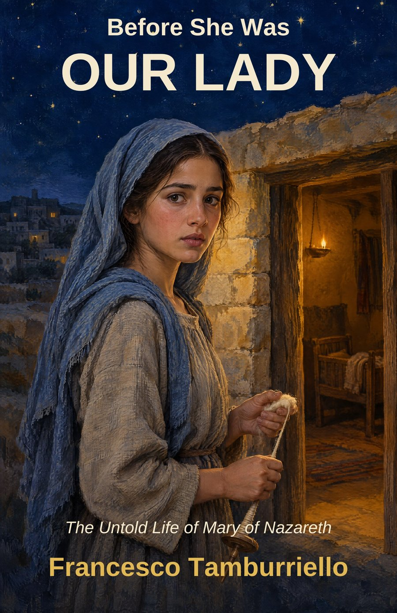
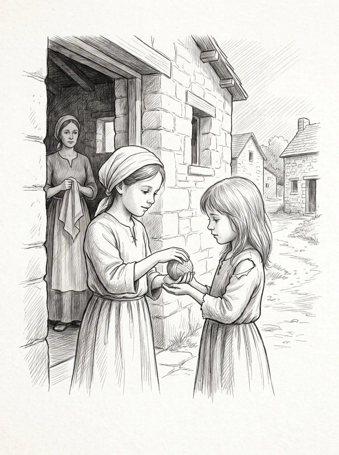

A book by Francesco Tamburriello
The Untold Life of Mary of Nazareth
She speaks six times in the Bible. This book tells the rest.
33 short chapters. 8 illustrations by Ana Maria Camejo. 8 Quiet Moments for groups and prayer.
Coming to Amazon in October 2026. Kindle Unlimited included.
Ordering for a parish or a group? See group prices
What you will discover
The book
Before the statues, before the titles, before the feast days, Mary was a girl in a village nobody noticed. She was afraid. She worked with her hands. She buried her parents and her husband. She waited, and she did not always understand, and she said yes anyway.
This is her life in thirty-three short chapters, from a house at the edge of Nazareth to a room in Jerusalem after Easter. You will walk the road to Bethlehem with her, cross a desert with a child in her arms, count the bread when the crowds begin to leave, and stand where she stood when there was nothing left to do but stay.
Each chapter ends with a verse. Each part closes with a pause for prayer and conversation, for a quiet evening, a parish group, or a pilgrimage.
Meet her as she was. You may find that she leads you, as she always has, to her Son.
Inside

The illustrations
The book is divided into eight parts. At the end of each one, a full-page illustration by Ana Maria Camejo and a short page called A Quiet Moment: a few paragraphs to think about what you have read, and three questions to carry with you or to bring to a group.
The paperback and hardcover are printed on cream paper, 5.5 by 8.5 inches, with a matte cover. The Kindle edition keeps all eight illustrations.
Read the first chapter
Mary, newborn. Nazareth.
The house stood at the edge of Nazareth, stone walls the color of the hills around it, close enough to the fields that in summer the smell of wheat drifted through the open door.
Anna's labor began in the night. When the sky turned gray over the hills it was still going, and by the time the sun cleared the ridge a cry rose from inside the house, small and clear, and Joachim, waiting outside with his hands pressed together, knew before anyone told him that his daughter had been born.
He stood there, breathing, as though he needed to be sure the sound was real.
When he was let in, Anna was holding the child against her shoulder, her face wet. Joachim knelt beside the bed and, not knowing what to do with his hands, took the edge of the blanket and straightened it.
"What do we call her?" Anna asked.
"Mary," Joachim said. They had chosen the name years before, not knowing if they would ever need it.
By noon the neighbors were at the door. They came in to look at the baby and stayed longer than they meant to, saying very little.
No one in Nazareth asked why a couple would weep so hard over one daughter. They did not know that Joachim had once walked out of the Temple with a pair of lambs still in his arms.
"For he has regarded the low estate of his handmaiden."Luke 1:48
Thirty-two chapters to go.
Coming to Amazon in October 2026. Kindle Unlimited included.
Read along, November 6 to December 8
Leave your email and I will send you the 33-day reading plan, with the Quiet Moment questions on one page, and a short note each week while we read.
No spam. One note a week, until December 8.
Parish and Group Kit
The book was written to be read in company: a parish group through Advent, a Legion of Mary praesidium, a pilgrimage, a family at the kitchen table. Start on November 6 and the thirty-third day is December 8, the Immaculate Conception. Start on July 14 and it is August 15, the Assumption.
| Copies | Paperback | Hardcover |
|---|---|---|
| 1 to 4 | $16.99 | $24.99 |
| 5 to 19 (30% off) | $11.89 each | $17.49 each |
| 20 or more (40% off) | $10.19 each | $14.99 each |
Parishes, Catholic bookshops and shrine gift shops order directly from me. For 1 to 4 copies, please order on Amazon. The books are printed to order, so please allow two weeks from your order to delivery. Orders are final; I am not able to take returns. Tell me how many copies you need and where to send them, and you will have an answer within two days.
hello@beforeshewasourlady.com
Copied.
Read along with Mary this Advent. Before She Was Our Lady: The Untold Life of Mary of Nazareth, by Francesco Tamburriello, tells her life in thirty-three short chapters. Read one a day from November 6 and you finish on December 8, the Immaculate Conception. Each part ends with questions for prayer or a small group. Available on Amazon. Group copies at beforeshewasourlady.com.
Before She Was Our Lady
Coming to Amazon in October 2026. Kindle Unlimited included.